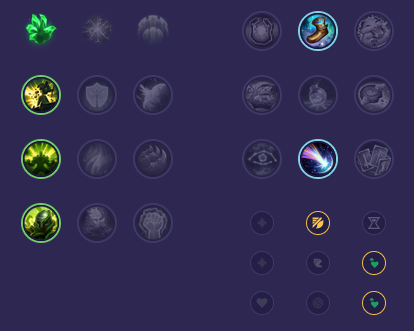

Starter: Pierścień Dorana 2x Mikstura Zdrowia Core Bulid: Stalowe Serce Obuwie Merkurego Głucha Poświata Full Bulid: Kolczasta Kolczuga Jak'Sho Zmienny Nieskończona Rozpacz

Słaby przeciwko: - Kayle - Illaoi - Kled - Dr. Mundo - Ornn - Teemo Dobry przeciwko: - Malphite - Gragas - Jax - Renekton - Zaahen - Tryndamere